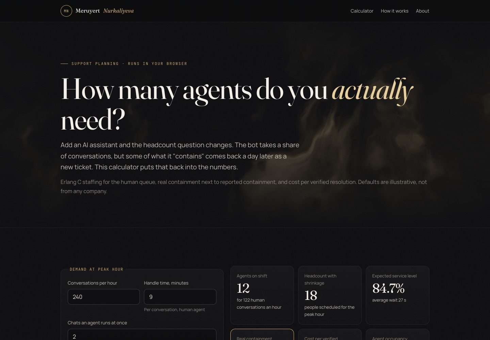
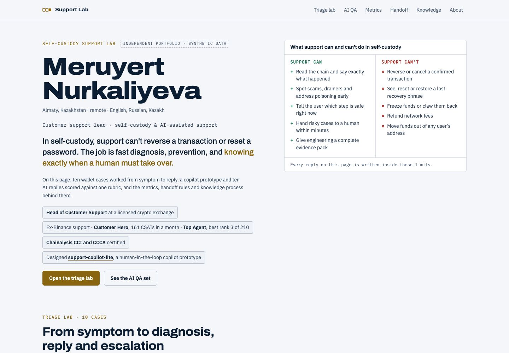
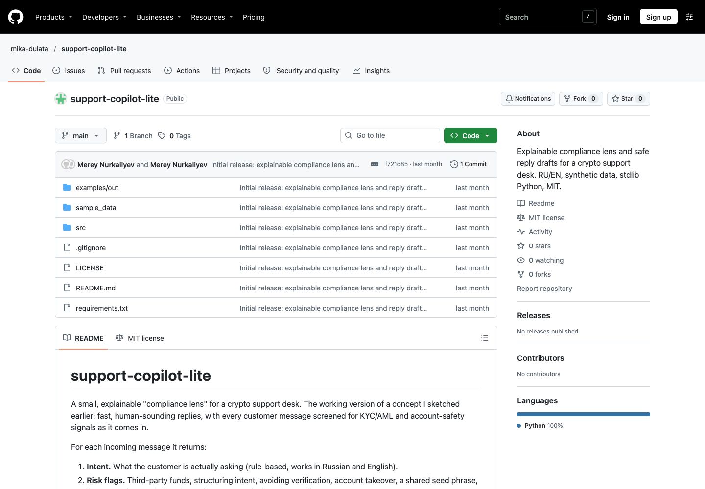
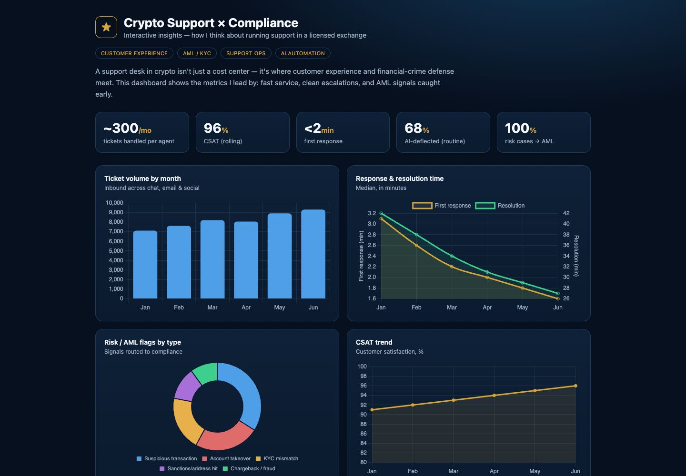

Head of Customer Support
Crypto exchange & custody
Coaching, QA, service levels, reporting, VIP cases, and escalations across compliance, product, and operations.
THE HUMAN SIDE OF CRYPTO
I lead support teams, quality assurance,
and complex escalations in crypto.
A LITTLE CONTEXT
My experience combines customer support leadership and internal audit at Binance. Today, I lead coaching, quality assurance, service levels, and cross-functional escalations in crypto.
SUPPORT / QUALITY / AUDIT
Crypto exchange & custody
Coaching, QA, service levels, reporting, VIP cases, and escalations across compliance, product, and operations.
Customer Support & Internal Audit
Senior support and team leadership, followed by internal audit. Customer Hero: 161 CSATs (July 2024). Top Agent: 5 of 254 (August 2024) and 8 of 221 (January 2025), on the English support line.
BTA Bank · LG Electronics · DHL
Banking reports, dealer credit control, and billing. A habit of tracing the evidence and following through.
Independent practice projects using synthetic examples and public information. Built for learning and demonstration, with a focus on capacity planning, quality review, and escalation decisions.

OPERATIONS · CAPACITY PLANNINGCompare how incoming volume, handling time, and service targets change a staffing estimate. A practical way to examine capacity-planning trade-offs.
TRY THE CALCULATOR
SELF-CUSTODY · QA · ESCALATIONSExplore self-custody support scenarios, review AI replies, and examine when a case needs a human specialist. Focus: quality review and escalation decisions.
OPEN THE LAB
PYTHON · RU / EN · HUMAN REVIEWA practice tool for risk flags, case routing, and reply drafts in Russian and English. Focus: reviewing the reasoning before a person sends a response.
VIEW REPOSITORY
SUPPORT × COMPLIANCEResearch and notes on customer support, compliance, and AI assistance. Explore the ideas behind the practical projects and support decisions.
READ THE NOTESTHE PERSON BEHIND THE PROCESS
Meruyert Nurkaliyeva
Customer Support Leader
A wrong-network send. A drained wallet. A fake support agent asking for a recovery phrase.
Support can’t reverse every loss. It can help reduce further risk, collect useful evidence, and explain the next steps honestly. That’s the standard I bring to support operations, quality assurance, and escalation processes.
My approach connects clear customer communication with quality review, evidence gathering, and a reason for every escalation.
GOOD SUPPORT STARTS WITH A CONVERSATION.
Let’s talk.↗Support leadership. Thoughtful operations.
Tools that help people do better work.